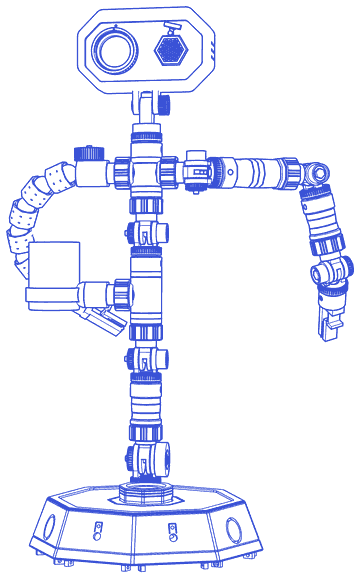
Technically, a lamp.
Serious mechanics.
Unserious personality.
// 02 · Blueprint · exploded view
Over-engineered.
Under-existing.
185 parts in the CAD build. 8 modules.
Every joint simulated. None of it built.
// 03 · Poses · simulated, legs folded under
Stands up
for itself.

Then the lamp stands back up and is developed: lines become black metal, brass and orange rings, and the first render of the lamp in its room takes over. One lamp, a lot of parts.
Then the parts fly home and seat with a quarter turn. The lamp is posed four ways in a simulation: upright, reach, task light, lean. In the reach pose the tipping margin is 25 millimetres, simulated, legs folded under. Nothing was built or tested.
- Base
- 01, J1 + tube 1
- 02, J2 + port tube
- 03, Stub + pen cup
- 04, J2 + shoulder tube
- 05, Ball-chain tentacle
- 06, Rigid arm, 2 joints
- 07, Neck: tilt + swivel
- 08, Head: round lens + hex eye
// 05 · Renders · Blender Cycles
Same lamp, up close.
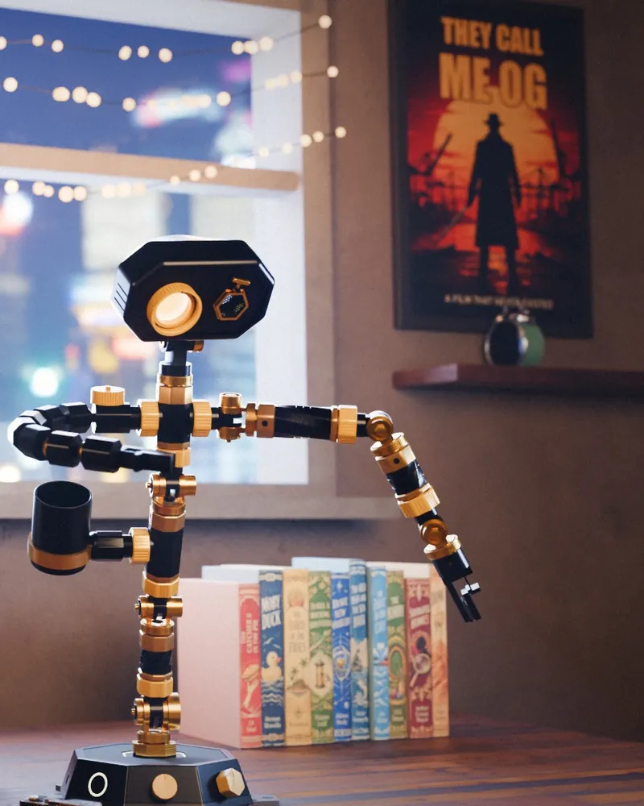
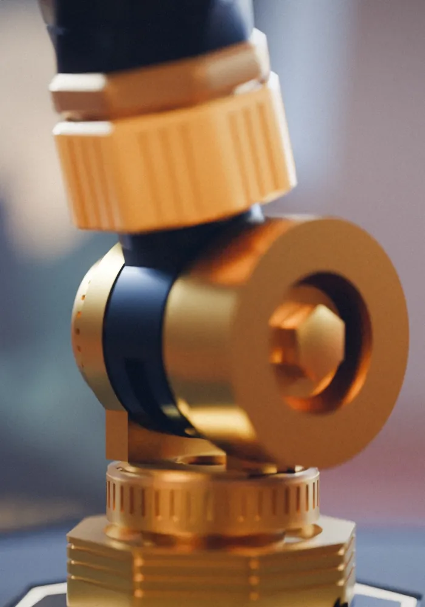
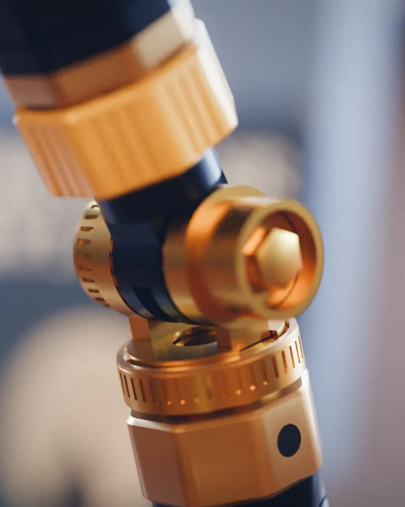
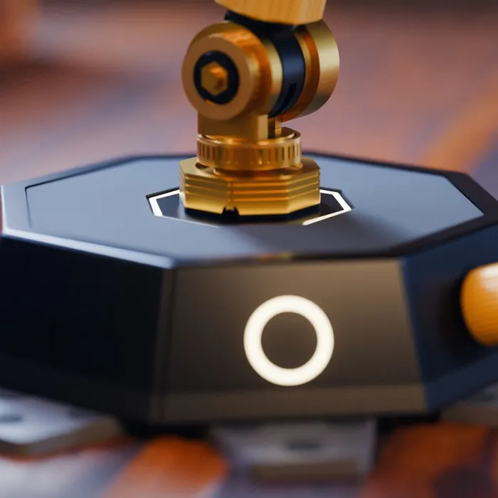
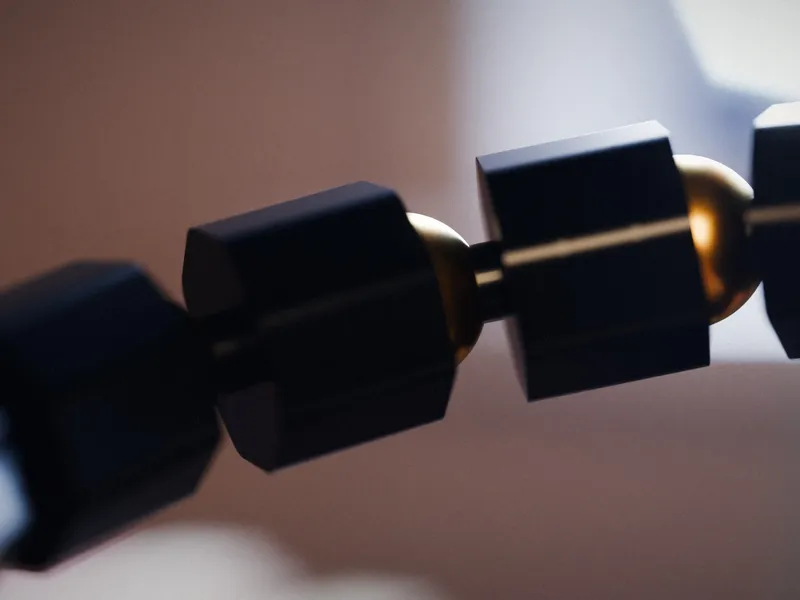
Ball chain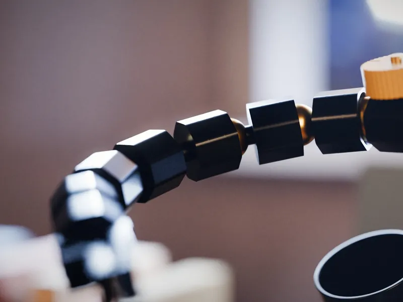
Tentacle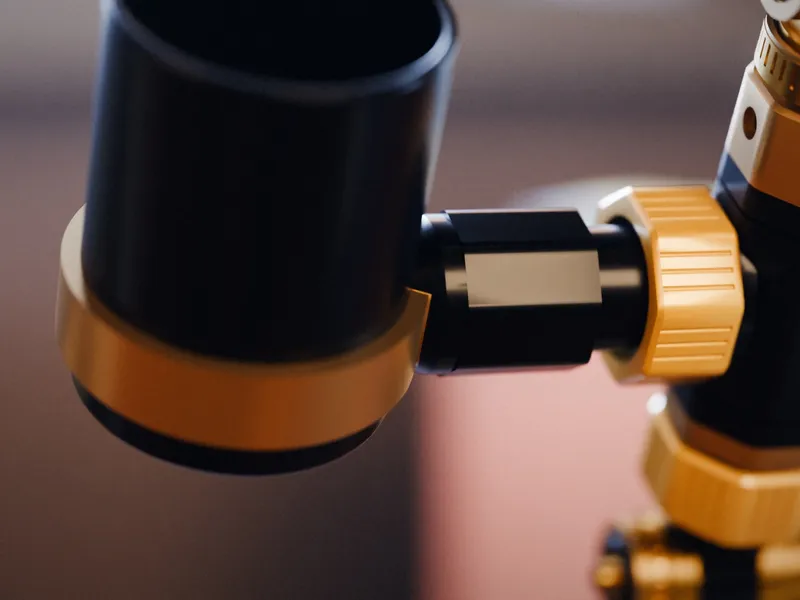
Pen cup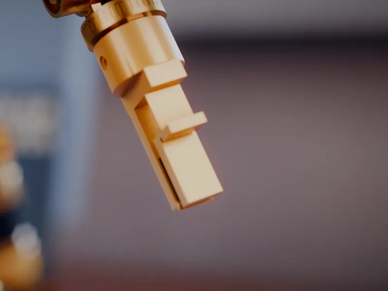
Gripper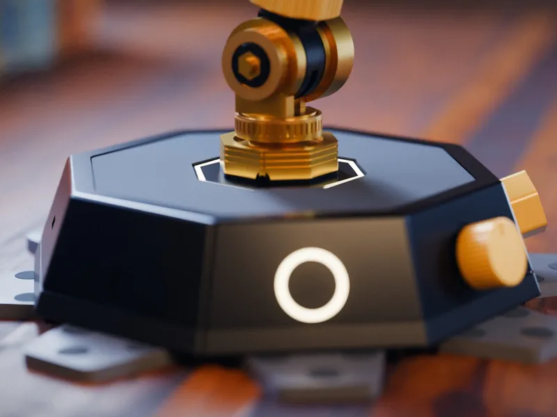
Base
// Brand · merch and packaging mock-ups
The marks, off the lamp.
The round lens and the hex eye became the logo, a pattern and a wordmark. These mock-ups show them on the things a lamp like this would ship with. Made with ChatGPT from the POGO marks, not photos of real products.
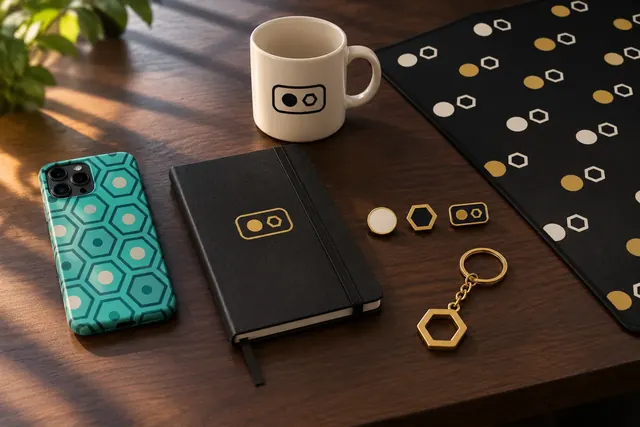
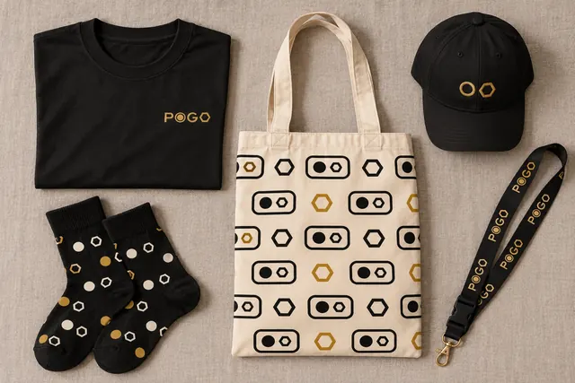
// 06 · Live · runs in your browser
Build one.
Pick a start, add parts, drag the lamp into a pose. Balance, joint load and clashes are checked as you move.
About 3 MB of models, loaded only on its own page.
// 07 · Case study
What I designed, and what the checks found.
POGO is a modular desk lamp. A base with fold-out legs, joints that lock with a twist of an orange ring, tubes in three lengths, and a head with two different eyes. You can hang a pen cup, a jointed arm or a bendy tentacle off the side tubes.
I designed every part in CAD, then wrote the maths that checks it: weight, balance, how much each joint has to hold, and whether parts hit each other. The builder runs that same maths in your browser. I have not built a lamp. Every number on this page comes from CAD and calculation, not from a test.
Why it will not tip over
Legs folded is the worst case, because the base is smallest. In the worst of the five poses I checked, the weight still lands 25 mm inside the base edge. With the legs open the margin is much bigger. The tightest pose is the reach with the arm loaded, so that is the one I watch when I change anything.
The tubes that failed
The tubes with a side port, where the cup and arm attach, failed my frame simulation. The wall around the port was too thin for the load. I rebuilt that zone: the bore narrows to the wire channel there, and a saddle spreads the load. The redone tubes pass at safety factors of 1.14 and 1.30. Those stack cautious assumptions and I have never printed one, so before trusting them I would print a test piece first.
The joint that had no margin
The first joint above the base carries the whole lamp. With the arm stretched out, it has to hold about 3.7 N·m. The clutch I had designed holds 3.3 N·m. It would have slipped. Joint v2 stacks eight disc springs in a larger housing and holds 4.6 N·m, which is 1.23× the load. At 150 g on the arm it still fails, so I set the arm rating to 100 g. That is a design limit, chosen from the maths.
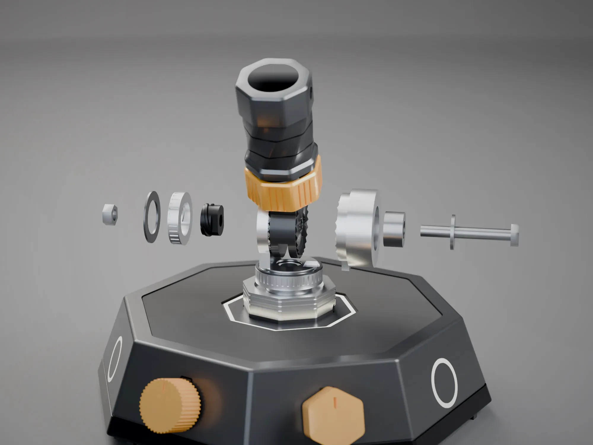
Fixing that joint moved the problem. The second joint is now the weakest, and in the builder it blocks 9 of the 63 pose and length combinations. I left it that way. Strengthening it too would add weight in the middle of the lamp.
How it was made
I build with AI. I set the design, made the decisions and judged every render. Claude, Anthropic's model, wrote most of the code: the CAD scripts, the simulation and the builder. The renders are Blender Cycles.
What this is, and is not
A design study. Designed and simulated. Not built, not physically tested. There is no price and nothing to buy.